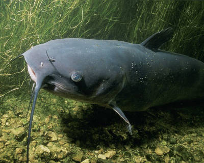

Portal dla wędkarzy
Ryby zamieszkujące rzeki
Szczupak pływa w rzece Warta-Obrzycko
Leszcz plywa w rzece Przemsza

Pobierz kwerendy
Ryby drapieżne naszych wód
Lp
Gatunek
Występowanie
1
Szczupak
Stawy, rzeki
2
Szczupak
Stawy, rzeki
3
Szczupak
Stawy, rzeki
Strone wykonał Łukasz Witkowski